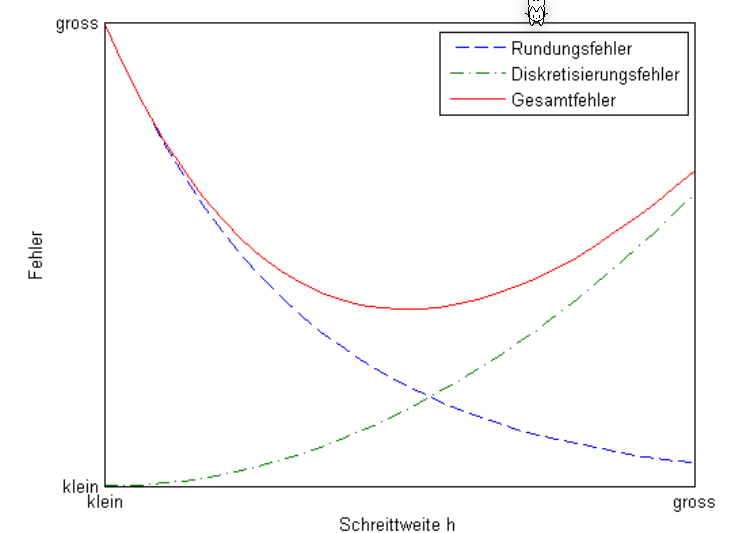
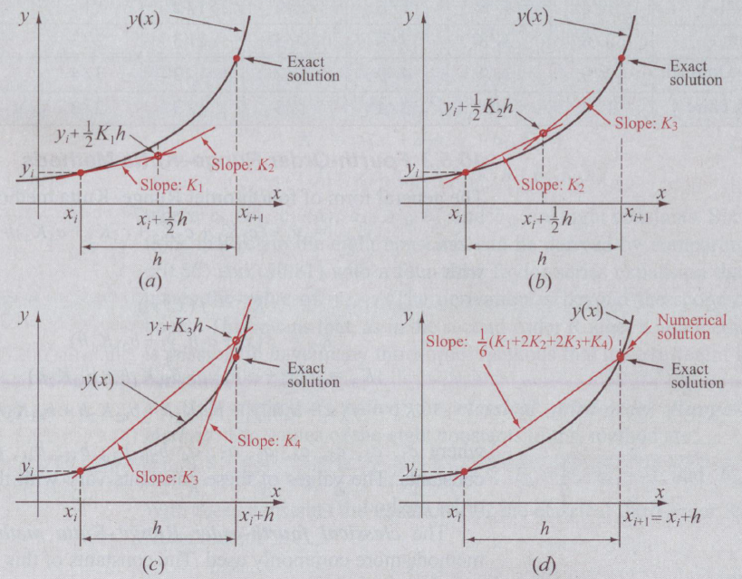
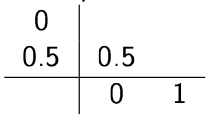
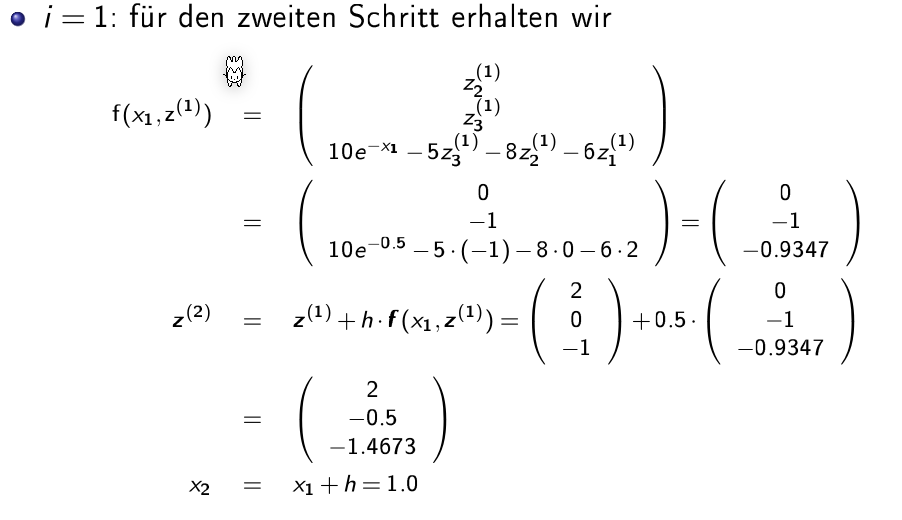
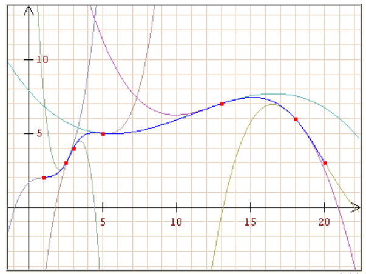
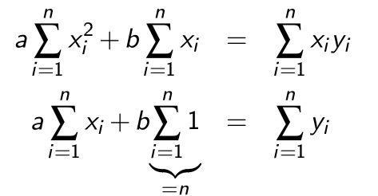
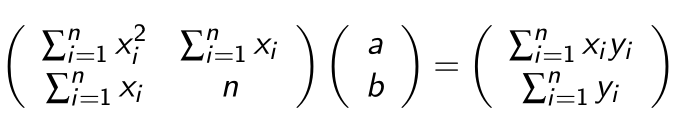

Differentialgleichungen
Eine gewöhnliche Differentialgleichung ist eine Gleichung, welche nur nach einer Variable abgeleitet wird: $$ \frac{\part y}{\part t} = f(t, y(t)) $$ Im oben Beispiel ist es eine gewöhnliche Differentialgleichung 1. Ordnung, da nur einmal Abgeleitet wurde.
Genereller ausgedrückt, folgendes ist eine gewöhnliche Differentialgleichung \(n\)-ter Ordnung: $$ y^{(n)}(x) = f(x, y(x), y'(x), ..., y^{(n-1)}(x)) $$ Eine allgemeine Lösung für eine Differentialgleichung \(n\)-ter Ordnung hat \(n\) unabhängige Parameter (von den Integrationskonstanten).
Differentialgleichungen, welche die folgende Form haben $$ \frac{\part n}{\part t}=-\lambda n $$ haben die Lösung \(n(t)\): $$ n(t)=n_0e^{-\lambda t} $$
Anfangswertproblem
Bei einem Anfangswertproblem wird, zusätzlich zu der Gleichung, den Funktionswert bei \(x_0\), wie auch den Wert für jede benützte Ableitung bei dem selben Wert \(x_0\).
Als Beispiel für folgende Funktion \(s\) wird \(C_1\) und \(C_2\) benötigt, damit ein Resultat berechnet werden kann. Es wird also \(s(t=0)\) und \(s'(t=0)\) benötigt, um das Anfangswertproblem zu lösen. $$ s''=g\ s(t)=\frac 1 2 g t^2 + C_1t + C_2\ s(t=0)=C_2\ s'(t=0)=v(t=0)=C_1 $$
Richtungsfelder
Ein Richtungsfeld stellt die Steigung als Pfeile dar. Dafür wurde in diesem Beispiel alle \(y'\) für alle Punkte berechnet und eingezeichnet.
Eulerverfahren
Klassisch
Um eine Lösung für eine Differentialgleichung mit einem Richtungsfeld zu finden, kann eine Schrittweite \(h\) definiert werden. Jeder Punkt \((x_i, y_i)\) soll nun den Pfeilen im Feld folgen. Dies kann folgendermassen für eine Differentialgleichung \(y'=f(x, y)\) erledigt werden: $$ \begin{align} x_{i+1} &= x_i + h\ y_{i+1} &= y_i + y' \cdot h \ &= y_i + f(x_i, y_i) \cdot h \end{align} $$ Zusätzlich wird auch noch ein Startpunkt \((x_0, y_0)\) benötigt.
Mittelpunkt

Im Vergleich zum Eulerverfahren, wo die Steigung beim Punkt \((x_i, y_i)\) berechnet wird, wird beim Mittelpunkt-Verfahren die Steigung bei \((x_i+\frac h 2, y_i + \frac h 2)\) berechnet.
Dafür muss aber der Punkt \((x_i+\frac h 2, y_i + \frac h 2)\) zuerst berechnet werden. Daher ergibt sich folgendes: $$ \begin{align} x_{h/2} &= x_i + \frac h 2\ y_{h/2} &= y_i + \frac h 2 \cdot f(x_i, y_i)\ \ x_{i+1} &= x_i + h\ y_{i+1} &= y_i + f(x_{h/2}, y_{h/2}) \cdot h \end{align} $$
Modifiziert

Beim modifizierten Verfahren wird zuerst die Steigung bei \((x_i, y_i)\) und bei \((x_{i+1}, y_{i+1})\) berechnet. Danach wird der nächste Punkt mit dem Mittel zwischen den beiden Steigungen den nächsten Punkt berechnet.

Fehler
Der lokaler Fehler ist definiert als: $$ \varphi(x_i, h) := y(x_{i+1}) - y_{i+1} $$ Wenn der lokaler Fehler folgendermassen schreiben kann, dann hat es die Konsistenzordnung \(p\): $$ \varphi(x_i, h)\le C\cdot h^{p+1} $$ Ebenfalls gibt es ein globalen Fehler, welcher definiert ist als: $$ y(x_n)-y_n $$ Wenn der globalen Fehler folgendermassen schreiben kann, dann hat es folgende Konvergenzordnung \(p\): $$ |y(x_n)-y_n| \le C\cdot h^p $$ Wie auch an den Formeln von der Konsistenzordnung und Konvergenzordnung zu sehen ist, hängt dieser Fehler von der Schrittweite \(h\) ab.

Es ist interesant ein Verfahren mit der Konvergenzordnung \(p\ge 1\) und \(h<1\), da dann \(C\cdot h^p\) gegen \(0\) strebt.
Für das Eulerverfahren gilt folgenden lokalen Fehler: $$ \begin{align} \varphi(x_n, h)=\frac{h^2}{2}y''(z) &&\text{, wobei } z \in [x_n, x_n+h] \end{align} $$ Das Mittelpunkt und modifizierte Eulerverfahren haben eine Konsistenz- und Konvergenzordnung \(p=2\).
In der folgenden Abbildung ist der lokale Fehler für diverse Verfahren auf einem log-log Plot:
Runge-Kutta Verfahren

Im Runge-Kutta-Verfahren wird zuerst die Steigung \(k_1\) bei \(x_i\) berechnet, dann \(k_2\) in der Mitte zwischen \(x_i\) und \(x_{i+1}\), \(k_3\) ist ebenfalls beim Mittelpunkt, aber mit der Steigung \(k_2\). Zuletzt wird \(k_4\) am Punkt \(x_{i+1}\) berechnet.

Die Konsistenz- und Konvergenzordnung von Runge-Kutta ist \(p=4\).
Allgemeines s-stufiges Runge-Kutta-Verfahren
Das allgemeine s-stufige Runge-Kutta-Verfahren: $$ \begin{align} k_n&=f\left(x_i + c_nh, y+h \sum^{n-1}{m=1}a n=1,...,s\ y_{i+1}&=y_i+h\sum^s_{n=1}b_nk_n \end{align} $$ Dabei ist }k_m\right) && \text{für \(s\in \N\) die Stufenzahl und \(a_{nm}\), \(b_n\) und \(c_n\) sind Konstante.

- Euler-Verfahren: \(s=1\)
- Mittelpunkt-Verfahren: \(s=2\) 
- Modifiziertes Euler-Verfahren: \(s=2\)
- Klassisches Runge-Kutta Verfahren: \(s=4\)

Differentialgleichung-System
Um ein Differentialgleichung-System zu lösen, kann \(y(x)\) als vektorwertige Funktion geschrieben werden.
Das Euler-Verfahren kann folgendermassen für Vektoren angepasst werden: $$ x_{i+1}=x_i + h\ \vec y_{i+1}=\vec y_i + \vec f(x_i, y_i)\cdot h $$ Oben ist es mit dem klassischen Eulerverfahren beschrieben. Dies kann aber mit allen Eulerverfahren gelöst werden.
Beispiel
Das folgende Beispiel kommt aus dem nächsten Unterkapitel "Differentialgleichung k-ter Ordnung zu DGL-System". $$ \begin{align} z_1'&=z_2\ z_2'&=z_3\ z_3'&=10e^{−x} − 5z_3 − 8z_2 − 6z_3 \end{align} $$ Zu dem gelten folgende Anfangswerte: $$ \vec z(0)=\begin{pmatrix}2 \ 0 \ 0\end{pmatrix} $$ Nun kommen die Iterationen:

Differentialgleichung k-ter Ordnung zu DGL-System
Um eine Differentialgleichung mit Ableitungen höher als erster Ableitungen zu lösen gibt es einen Trick: $$ y'''+5y''+ 8y' + 6y = 10e^{-x} $$
-
Nachh der höchsten Ableitung umformen: \(y''' = 10e^{−x} − 5y'' − 8y' − 6y\)
-
Alle Ableitungen von \(y\) tiefer als die höchste Ableitungen durch \(z_i\) ersetzen: \(z_1=y, z_2=y', z_3=y''\)
-
Und in der Gleichung einsetzen \(y''' = 10e^{−x} − 5y'' − 8y' − 6y\Rightarrow z_3'=y''' = 10e^{−x} − 5z_3 − 8z_2 − 6z_3\)
-
Es sind nun drei Gleichungen: \(z_1'=y'=z_2\)
\(z_2'=y''=z_3\)
\(z_3' = 10e^{−x} − 5z_3 − 8z_2 − 6z_3\) -
In diesem Fall können sie auch vektoriel geschrieben werden: \(\begin{pmatrix}z_2 \\ z_3 \\ 10e^{−x} − 5z_3 − 8z_2 − 6z_3 \end{pmatrix}=\begin{pmatrix}z_1' \\ z_2' \\ z_3'\end{pmatrix}\)
Mit der Start-Bedingungen: \(\vec z(0)=\begin{pmatrix}0 \\ 0 \\ 0\end{pmatrix}\)
Stabilität
Wie stabil eine Lösung einer DGL ist hängt von dem benutzten Verfahren, der Schrittbreite und dem spezifischen Anfangsproblem ab.

Interpolation
Gegeben sind \(n+1\) Stützpunkte/Wertpaare \((x_i, y_i)\), wobei \(x_i \neq x_i\) für \(i\neq j\) gelten muss. Gesucht ist nun eine stetige Funktion \(g\) mit der Eigenschaft \(g(x_i)=y_i\) für alle \(i=0, ..., n\)
Polynominterpolation
Wenn \(n+1\) Stützpunkte gegen sind, kann das Polynom \(P_n(x)=a_0 + a_1x + a_2+x^2 + ... + a_nx^n\)
Wenn \(x\) ein Vektor ist, kann auch eine Vandermonde-Matrix gebildet werden: $$ \begin{align} a_0 + a_1x_0 + a_2+x_0^2 + ... &+ a_nx_0^n\ a_0 + a_1x_1 + a_2+x_1^2 + ... &+ a_nx_1^n\ ...& \ a_0 + a_1x_n + a_2+x_n^2 + ... &+ a_nx_n^n\ \end{align} $$
Diese Rechnung ist allerdings oft schlecht Konditioniert und wird für \(n> 20\) Stützpunkte instabil. Ein möglichen Ersatz ist das Lagrange Polynom
Lagrange Interpolation
Das Lagrange Polynom kann für \(n\) Stützpunkte berechnet werden und ergibt ein Polynom mit dem Rang \(n-1\). $$ P_n(x)=\sum^n_{i=0}I_i(x)y_i\ I_i(x)=\prod^n_{\substack{j=0\i\neq j}}\frac{x-x_j}{x_i-x_j} $$ Der maximale absoluten Fehler der dabei entstehen kann ist: $$ |f(x)-P_n(x)| \le \frac{|(x-x_0)(x-x_1)...(x-x_n)|}{(n+1)!}\cdot(\max_{x0\le \xi \le x_n}|f^{(x+1)}(\xi)|) $$ Als Bemerkung \(f^{(x+1)}\) ist die \((x+1)\)-te Ableitung
Da für die Fehlerberechnung die eigentliche Funktion \(f\) benötigt wird, ist dies recht nutzlos.
Spline Interpolation

Es wird für jedes Intervall \([x_i, x_{i+1}]\) (für \(i=0, 1, 2,, ..., n-1\)) wird ein Polynom \(s_i\) angesetzt. Das Polynom muss folgende Gleichungen erfüllen:
- Es muss durch alle Punkte im Intervall \([x_i, x_{i+1}]\) gehen \(s_i(x_i)=y, s_i(x_{i+1})=y_{i+1}, ...\)
- Der Übergang zwischen den Polynomen muss stetig sein \(s_i(x_{i+1})=s_{i+1}(x_{i+1})\)
- Es darf kein Knick beinhalten \(s_i'(x_{i+1})=s_{i+1}'(x_{i+1})\)
- Die Krümmung von zwei Splines soll auch gleich sein \(s_i''(x_{i+1})=s_{i+1}''(x_{i+1})\)

Um die Spline von oben zu berechnen, können nun folgende Polynome definiert werden: $$ \begin{align} S_0&=a_0+b_0(x-x_0)+c_0(x-x_0)^2 + d_0(x-x_0)^3 &, x\in [x_0, x_1] \ S_1&=a_1+b_1(x-x_1)+c_1(x-x_1)^2 + d_1(x-x_1)^3 &, x\in [x_1, x_2]\ S_2&=a_2+b_2(x-x_2)+c_2(x-x_2)^2 + d_2(x-x_2)^3 &, x\in [x_2, x_3]\ \end{align} $$ Aus diesen können nun folgendes Gleichungssytem aufgestellt werden: $$ \begin{align} S_0(x_0)&=y_0\ S_1(x_1)&=y_1 \ S_2(x_2)&=y_2 \ S_2(x_3)&=y_3 \ \ S_0(x_1)&=S_1(x_1)\ S_1(x_2)&=S_2(x_2)\ \ S_0'(x_1)&=S_1'(x_1)\ S_1'(x_2)&=S_2'(x_2)\ \ S_0''(x_1)&=S_1''(x_1)\ S_1'0(x_2)&=S_2''(x_2)\ \end{align} $$ Dies sind aber "nur" 10 Gleichungen, nicht die benötigten 12. Daher gibt es noch zusätzliche Bediungen:
- natürliche kubische Splinefunktion \(S_0''(x_0)=0, S_2(x_3)''=0\)
- peridodische kubische Splinefunktion \(S_0'(x0)=S_2'(x_3), S_0''(x0)=S_2''(x_3)\)
- kubische Spliefunktion (mit not-a-knot Bedinungen) \(S_0'''(x_1)=S_1'''(x_1), S_1'''(x_2)=S_2'''(x_2)\)
Algorithmus
Für \(n+1\) Stützpunkte werden \(n\) Gleichungen nach der Form \(S_i=a_i+b_i(x-x_i)+c_i(x-x_i)^2 + d_i(x-x_i)^3, x\in [x_i, x_{i+1}]\) gesucht. Dafür kann folgender Algorithmus für jedes \(S_i\) angewendet werden:
- Wenn die natürliche kubische Splinefunktion gesucht ist, wird \(c\) auf \(0\) gesetzt damit die zweite Ableitung \(0\) ergibt \(c_0=0, c_n=0\)
- Für jedes Polynom \(S_i\)
- \(a_i=y_i\)
- Die Breite des Intervalles \(h_i=x_{i+1}-x_i\)
- \(c_i\) bestimmen
- \(b_i\) und \(d_i\) für jedes \(S_i\) bestimmen
- \(b_i=\frac{y_{i+1}-y_i}{h_i}-\frac{h_i}{3}(c_{i+1}+2c_i)\)
- \(d_i=\frac 1{3h_i}(c_{i+1}-c_i)\)
Für das Beispiel \(...\):
| \(i\) | 0 | 1 | 2 | 3 |
|---|---|---|---|---|
| \(x_i\) | 0 | 1 | 2 | 3 |
| \(y_i\) | 2 | 1 | 2 | 2 |
| \(a_i\) | 2 | 1 | 2 | - |
| \(h_i\) | 1 | 1 | 1 | - |
| \(c_i\) | 0 | ? | ? | 0 |
Um \(c_1\) und \(c_2\) zu finden kann folgendes Gleichungssystem gelöst werden: $$ A=\begin{pmatrix} 2(h_0+g_1) & h_1 \ h_1 & 2(h_1+h_2) \end{pmatrix} \ A \cdot \begin{pmatrix}c_1 \ c_2 \end{pmatrix} = \begin{pmatrix}
\end{pmatrix} $$
Lineare Ausgleichunsrechnung
Es wird eine Funktion gesucht, in der Form: $$ f(x)=\lambda_1f_1(x)+... + \lambda_mf_m(x) $$ Ein mögliches Beispiel wäre: \(f(x)=\lambda_1 \cdot \underbrace{1}_{f_1(x)} + \lambda_2\cdot \underbrace x_{f_2(x)} + \lambda_3 \cdot \underbrace{x^2}_{f_3(x)}\)
Um nun die \(\lambda\)s zu finden, damit \(f(x)\) Datenpunkte nachgeht, muss der Fehler \(E(f)\) zu den Datenpunkten minimieren:
$$ E(f)=w\cdot||y_f-(x)||2^2 = \sum^nw_i\cdot (y_i - f(x_i))^2 $$ Mit \(w\) kann ein Punkt stärker oder schwächer gewichtet werden
Um dies zu minimieren, wird die Ableitung von \(E(f)=0\) gesetzt:

Aus dem folgt:


Dies funktioniert allerdings nur für eine Gerade. Die selbe Methode kann aber auch für höhere Polynomen verwendet werden:
$$
E(f)=||\vec y-f(\vec x)||2^2=\sum^n\lambda_jf_j(x_i)\right)^2=||\vec y-A\lambda||_2^2
$$
Mit folgender Matrix }(y_i-f(x_i))^2 = \sum^n_{i=1}\left(y_i - \sum^m_{j=1\(A\):

Die Gleichung \(E(f)=0\) hat nur im Spezialfall eine Lösung, wenn \(m=n\) und wenn die Funktion \(f\) durch alle Punkte geht.
Normalgleichungen
Um \(E(f)\) zu minimieren muss die erste Ableitung von \(E'(f)=0\) sein. Daher muss \(E(f)\) nach jedem \(\lambda\) abgeleitet werden: $$ \frac{\part E(f)(\lambda_1, ..., \lambda_m)}{\part \lambda_j}=0 , j=0,...,m $$ Dies nennt sich eine Normalgleichung und lässt sich als \(A^TA\lambda=A^Ty\).
\(A\) ist oft schlecht konditioniert und die Lösung sollte daher mit dem QR-Verfahren gelöst werden.
Linearisieren
Falls eine \(f\) Funktion auf den ersten Blick nicht linear erscheint, kann sie eventuell linearisiert werden.
Z.B. die Funktion \(ae^{bx}\) kann mit \(\log_e\) linearisiert werden.

Nicht-Lineare Ausgleichsrechnung
Das allgemeine Ausgleichsproblem besteht darin folgendes \(E\) zu minimieren:

Die Ableitung von \(E\) wird auf \(E'(f)=0\) gesetzt. Dafür kann das Gauss-Newton-Verfahren.
Gauss-Newton-Verfahren
Das Quadratmittelproblem ist es einen Vektor \(x\in\R^m\) zu finden, welcher die Fehlerfunktional \(E: \R^m \to \R:=||g(x)||_2^2\) minimiert. \(E\) gehört zur Funktion \(g: \R^m \to \R^n\)
\(g\) wird nun definiert als \(g(\lambda):=y-f(\lambda)\).
Um nun für eine nicht lineare Funktionen \(f\) eine Lösung zu finden, muss \(f\) linearisiert werden: $$ \begin{align} g(\lambda)&\approx g(\lambda_0)+Dg(\lambda_0)\cdot(\lambda - \lambda_0)\ \ Dg(x)&=\begin{pmatrix} \frac{\partial g_1}{\partial x_1}(\vec x) & \frac{\partial g_1}{\partial x_2}(\vec x) & ... & \frac{\partial g_1}{\partial x_n}(\vec x) \
\frac{\partial g_2}{\partial x_1}(\vec x) & \frac{\partial g_2}{\partial x_2}(\vec x) & ... & \frac{\partial g_2}{\partial x_n}(\vec x) \
... & ... & ... & ... \ \frac{\partial g_m}{\partial x_1}(\vec x) & \frac{\partial g_m}{\partial x_2}(\vec x) & ... & \frac{\partial g_m}{\partial x_n}(\vec x) \ \end{pmatrix} \end{align} $$ \(E\) kann nun folgendermassen definiert werden: $$ \tilde E(\lambda) = ||\underbrace{g(\lambda_k)}{\tilde y} + \underbrace{Dg(\lambda_k)}_\delta||_2^2 $$ Wobei } \cdot \underbrace{(\lambda-\lambda_k)\(k=0,1,...\) ist.
Dies kann nun wie eine lineare Gleichung gelöst werden: $$ Dg(\lambda_k)^TDg(\lambda_k)\delta_k=-Dg(\lambda_k)^T\cdot g(\lambda_k) $$ Oder mit dem QR-Verfahren: $$ Dg(\lambda_k)=Q_kR_k\ R_k\lambda_k=-Q_k^Tg(\lambda_k) $$ Für jedes \(k\) wird nun \(\tilde E\) minimiert, bzw. die obere Gleichung aufgelöst.
Das nächste \(\lambda\) kann wie folgt ausgerechnet wird: $$ \lambda_{k+1}=\lambda_k+\delta_k $$
Gedämpftes Gauss-Newton-Verfahren
Das gedämpte Gauss-Netwon-Verfahren funktioniert gleich, wie das "normale" Verfahren, nur das \(\delta_k\) verkleinert wird.
Um das \(\delta_k\) für die nächste Iteration zu finden, soll folgende für folgende Formel das minimale \(p\in{0, 1, ..., p_{max}}\) gefunden werden $$ ||g\left(\lambda_k+\frac{\delta_k}{2^p}\right)||2^2 < ||g(\lambda_k)||_2^2 $$ \(\lambda_{k+1}\) wird nun folgendermassen berechnet: $$ \lambda $$ Falls kein minimales }=\lambda_k+\frac{\delta_k}{2^p\(p\) gefunden werden kann, wird mit \(p=0\) gerechnet.
Nichtlineare Gleichungssysteme
Multivariate Funktionen
Skalarwertige Funktion
Eine Funktion, welche mehrere \(x\)-Werte nimmt und ein \(y\)-Wert zurück gibt. $$ f: \mathbb R ^n \to \mathbb R \ y = f(x_1, x_2, ..., x_n) $$
Vektorwertige Funktion
Eine Funktion, welche mehrere \(x\)-Werte nimmt und mehrere \(y\)-Werte zurück gegeben $$ f: \mathbb R^n \to \mathbb R^m \ (y_1, y_2, ..., y_m) = f(x_1, x_2, ..., x_n) $$
Explizite und implizite Funktionen
Explizite Funktionen haben die folgende Form: \(y=f(x_1, x_2, ..., x_n)\)
Implizite Funktionen haben die folgende Form: \(F(x_1, x_2, ..., x_n, y)=0\)
Partielle Ableitung
Um die Funktion \(z=f(x, y) = 2x^2 + 5 y\) abzuleiten, kann nach \(x\) und \(y\) separat abgeleitet werden: $$ \begin{align} \text{nach }x: \frac{\partial f}{\partial x} &= 4x + 0 \ \text{nach }y: \frac{\partial f}{\partial y} &= 0 + 5 \ \end{align} $$ Diese Ableitung kann folgendermassen visualisiert werden:

Jacobi-Matrix
Für die Funktion \(f: \mathbb R^n \to \mathbb R^m\) mit \(\vec y = f(\vec x)=\begin{pmatrix}y_1=f_1(\vec x) \\ y_2 = f_2(\vec x)\\ ... \\ y_m=f_m(\vec x)\end{pmatrix}\) und \(\vec x = (x_1, x_2, ..., x_n)^T\) ist die Jacobi-Matrix das folgende: $$ Df(x)=\begin{pmatrix} \frac{\partial f_1}{\partial x_1}(\vec x) & \frac{\partial f_1}{\partial x_2}(\vec x) & ... & \frac{\partial f_1}{\partial x_n}(\vec x) \
\frac{\partial f_2}{\partial x_1}(\vec x) & \frac{\partial f_2}{\partial x_2}(\vec x) & ... & \frac{\partial f_2}{\partial x_n}(\vec x) \
... & ... & ... & ... \ \frac{\partial f_m}{\partial x_1}(\vec x) & \frac{\partial f_m}{\partial x_2}(\vec x) & ... & \frac{\partial f_m}{\partial x_n}(\vec x) \ \end{pmatrix} $$ In dieser Matrix ist in einer Reihe alle möglichen partiellen Ableitungen für \(f_1(\vec x)\)
Linearisierung
Eine Approximation für \(y=f(x)\) kann mit \(f(x)\approx f(x_0) + f'(x-x_0)\).
Dasselbe kann auch für eine multivariante Funktion mithilfe der Jacobi-Matrix getan werden: \(g(\vec x)=f(\vec {x_0}) + Df(\vec {x_0})\cdot (\vec x-\vec {x_0})\)
(\(Df(\vec x)\) ist die Jacobi-Matrix)
Nach dem Linearisieren wird ein nichtlineare Funktion lineare und kann mit bekannten Verfahren gelöst werde
Newton-Verfahre
Das Newton-Verfahren erwartet, dass \(f(\vec x_n)=\vec 0\) gilt.
Um nicht die Jacobi-Matrix invertieren zu müssen, kann folgender Trick angewendet werden: $$ \vec \delta_n :=-(Df(\vec x_n))^{-1}\cdot f(\vec x_n)\ \text{Dies kann in folgendes Umgewandlet werden:}\ Df(\vec x_n)\cdot \vec\delta x_n = -f(\vec x_n) $$ Die Gleichung \(Df(\vec x_n)\cdot \vec\delta x_n = -f(\vec x_n)\) ist ein lineares Gleichungssystem, welches relativ einfach gelöst werden kann. Danach kann \(\vec \delta _n\) anstelle von \(-(Df(\vec x_n))^{-1}\cdot f(\vec x_n)\) verwendet werden: \(\vec x_{n+1}=\vec x_n+\vec \delta_n\)
Das Newton-Verfahren konvergiert quadratisch für nah genug an einer Nullstelle \(\overline x\) liegende Startwerte, wenn \(Df(\overline x)\) regulär und \(f\) dreimal stetig differenzierbar ist.
Für eine Nichtreguläre Matrix A gilt \(\det(A)\ne 0\)
Mögliche Abbruchskriterien sind:
- \(n > n_{max}\)
- \(||\vec x_{n+1}-\vec x_n||\le ||\vec x_{n+1}||\cdot \varepsilon\)
- \(||\vec x_{n+1}-\vec x_n||\le \varepsilon\)
- \(||f(\vec x_{n+1})||\le \varepsilon\)$
Vereinfachtes Newton-Verfahren
Beim regulären Newton-Verfahren muss bei jeden Iterationsschritt die Jacobi-Matrix \(Df(\vec x)\) neuberechnen. Beim vereinfachten Newton-Verfahren wird \(Df(\vec x)\) nur für den Startvektor berechnet. $$ \vec x_{n+1}=\vec x_n-(Df(\vec x_0))^{-1}\cdot f(\vec x_n)\ Df(\vec x_0)\cdot \vec\delta x_n = -f(\vec x_n) $$ Wegen dieser Vereinfachung kovergiert das Verfahren nur noch linear gegen die Nullstelle, wenn \(Df(\overline x)\) nicht regulär ist.
Gedämptes Newton-Verfahren
Wenn \(Df(\vec x_n)\) schlecht konvergiert, dann kann nicht generell erwartet werden, dass \(\vec x_{n+1}=\vec x_n + \vec \delta_n\) nicht gilt.

Für das gedämpfte Newton-Verfahren werden folgende Schritte angewendet:
- Berechne \(\delta_n\) mit \(Df(\vec x_n)\delta_n=-f(\vec x_n)\) ausgerechnet
- Finde das minimale \(k\in \{0, 1, ...\}\) für das gilt: \(||f(\vec x_n + \frac{\vec \delta_n}{2^k})||_2 < ||f(\vec x_n)||_2\)
- Wenn kein \(k\) gefunden wird, soll mit \(k=0\) weiter gerechnet werden
- Nun soll die Iterationsgleichung \(\vec x_{n+1}=\vec x_n + \frac{\vec \delta_n}{2^k}\) verwendet werden# Numerische Itegration
Rechteck- & Trapezregel


Die folgenden formel ziehen ein Rechteck, bzw. Trapez über das ganze Integral. $$ \text{Das Integral}\ \int_a^b f(x)\mathrm d x\ \ \text{kann folgendermassen approximiert werden}\ Rf=f\left(\frac{a+b}{2}\right) \cdot (b - a)\ Tf=\frac{f(a) + f(b)} 2 \cdot (b - a) $$ (Rf = Rechtecksregel, Tf = Trapezregel)
Für die summierte Rechteck- & Trapezregel wird das Integral in kleinere Schritte mit der breite \(h\) unterteilt.
$$
Rf(h)=h\cdot \sum^{n-1}{i=0} f(x_i +\frac h 2)\
Tf(h)=h\cdot \left(\frac{f(a) + f(b)}{2} +\sum^{n-1} f(x_i) \right)\
\text{wobei gilt}
x_i=a+i\cdot h\
h=\frac{b-a} n
$$

Simpsonregel

Für das lösen eines Segments müssen folgende Formel ausgerechnet werden. Dabei wird das Polynom \(p(x)=\alpha+\beta(x-a) + \gamma(x-a)(x-b)\) verwendet.

Da \(f(x)\approx p(x)\) gilt, kann das Polynom integriert werden:

Die Regel oben haben nur ein Segment benutzt. Wie aber auch bei der Rechtecks- und Trapezregel, kann auch hier die summierte Simpsonregel verwendet werden. $$ Sf(h)=\frac h 3 \left(\frac 1 2 f(a) + \sum^{n-1}{i=1} f(x_i) + 2 \sum^n \right) + \frac 1 2 f(b) \right) $$ Die Simpsonsregel kann auch mit dem Rechtecks- und Trapezregel berechnet werden: $$ Sf(h)=\frac 1 3 (Tf(h) + 2 Rf(h)) $$} f\left (\frac{x_{i-1}+x_i}{2
Fehlerabschätzung

Gaussformel
Die folgenden Formel bestimmen das Integral zwischen \(a\) und \(b\), wenn es \(n\) Stützpunkte gibt. Dabei müssen die Stützpunkte nicht äquidistant sein.

Romberg Extrapolation

Die Rekursion wird ausgerechnet bis \(k=0\) wird, da dann die Formel \(T_{j0}=Tf\left(\frac{b-a}{2^j}\right)\)
Da die Werte von \(f(...)\) immer in \(T_{j0}\) wiederverwendet werden, kann dies mit der folgenden Formel vereinfacht werden: $$ T_{j0}=\frac 1 2 T_{j-1,0}+h_j\sum^{n_{j-1}}_{i=1}f(a+(2i-1)h_j) $$ Die zweite Spalte \(T_{j1}\) kann mit der Simpson-Regel berechnet werden: $$
$$
Die folgende Graphik zeigt die oben abgebildete Rekursion:

Die folgenden zwei Graphen zeigen \(T_{00}\) und \(T_{10}\). Wenn \(j\) um 1 höher wird, wird die X-Achse halbiert. Dasselbe gilt für \(T_{30}\) und \(T_{40}\)